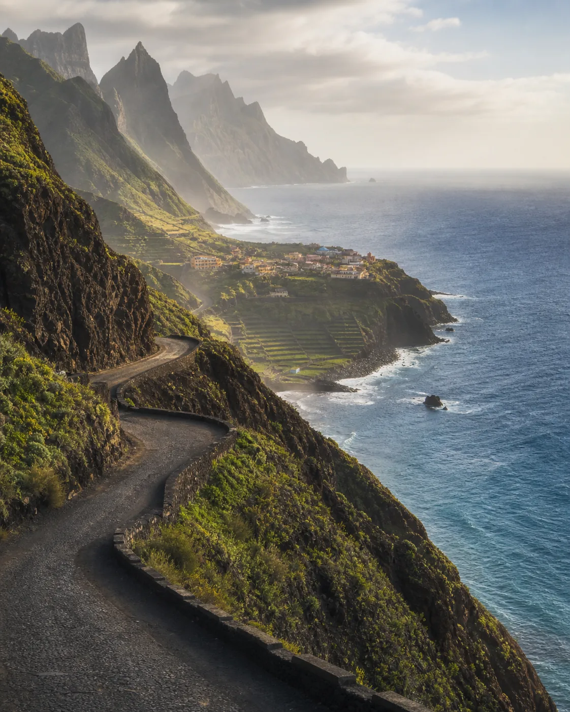
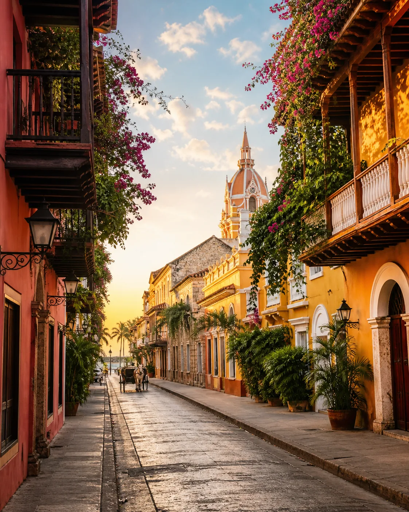
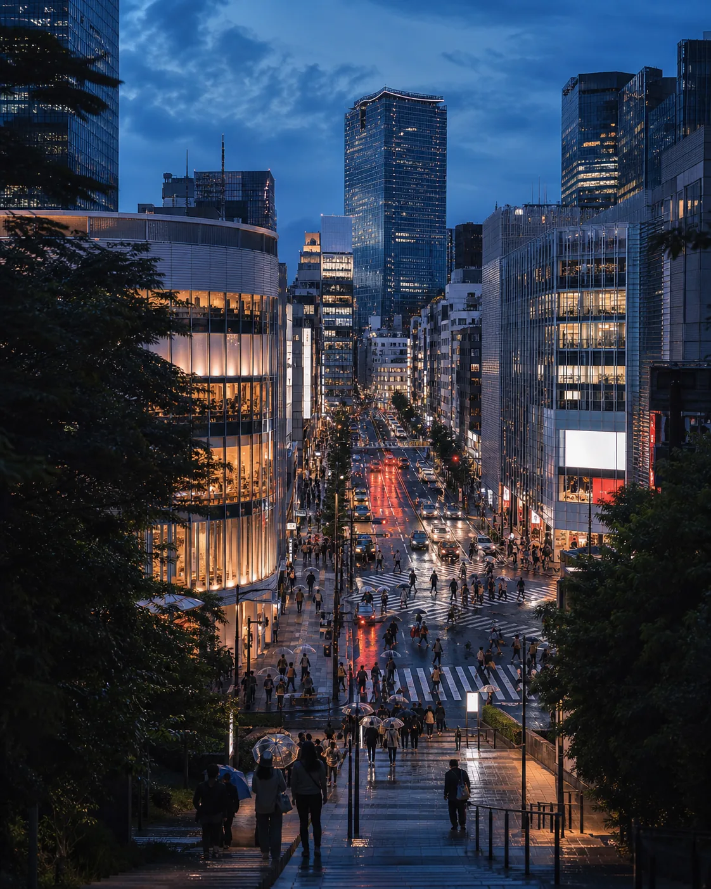

01● EN MOVIMIENTOÁFRICA
Cabo Verde
Santo Antão
8 días · 7 nochesDesde USD 1.650
Caminos sobre acantilados, valles verdes y pueblos que miran al Atlántico más profundo.
Elegir este destino ↗Islandia
En wander no necesitas ser millonario para darte tus vacaciones.
Descubre tu próximo destino ↓Explora
Una selección de lugares que despiertan algo en ti. Elige el destino; nosotros diseñamos el resto.

Cabo Verde
Caminos sobre acantilados, valles verdes y pueblos que miran al Atlántico más profundo.
Elegir este destino ↗
Colombia
Balcones floridos, cocina caribeña y tardes doradas recorriendo la ciudad amurallada.
Elegir este destino ↗
Japón
Arquitectura, sabores nocturnos y barrios que cambian de personalidad en cada estación.
Elegir este destino ↗Nuestra forma de viajar
No coleccionamos destinos.
Coleccionamos historias.
Creemos que un gran viaje no se mide en kilómetros, sino en aquello que cambia dentro de ti. Por eso diseñamos cada ruta con tiempo, cuidado y personas que conocen de verdad el lugar.
Historias de vuelta
Ellos ya vivieron su próxima gran historia. Esto fue lo que más se llevaron de vuelta a casa.
“Cartagena fue exactamente lo que imaginábamos, pero sin preocuparnos por nada. Cada recomendación se sintió personal.”
“Tokio parecía imposible de organizar. Wander convirtió nueve días en una ruta tranquila, deliciosa y llena de sorpresas.”
“Santo Antão nos sorprendió por completo. Los guías locales y los alojamientos pequeños hicieron toda la diferencia.”
Tu próximo viaje empieza aquí
Cuéntanos qué imaginas y uno de nuestros diseñadores de viaje te contactará para crear una propuesta a tu medida.